pacman::p_load(sp, sf, raster, spatstat, tmap, tidyverse, spNetwork, tmaptools)Take-home Exercise 1
Take-home Exercise 1: Geospatial Analytics for Public Good
1 Overview
According to the World Health Organization (WHO), Thailand ranks 9th out of 175 WHO registered countries for road traffic deaths. WHO estimated an average of 50 road traffic deaths. This study will explore on the causes of accidents in Bangkok Metropolitan Region, to reduce future risk of road traffic accidents in Thailand.
2 Getting Started
2.1 Objectives
The purpose of this study is to discover the factors affecting road traffic accidents in Bangkok Metropolitan Region (BMR) by employing both spatial spatio-temporal point patterns analysis methods.
List of objectives:
- To visualize the spatio-temporal dynamics of road traffic accidents in BMR using appropriate statistical graphics and geovisualization methods
- To conduct detailed spatial analysis of road traffic accidents using appropriate Network Spatial Point Patterns Analysis methods.
- To conduct detailed spatio-temporal analysis of road traffic accidents using appropriate Temporal Network Spatial Point Patterns Analysis methods.
Road Traffic Accident major factors:
- Behavioural Factors
Driver Behaviour (driving style)
Driver Performance (driving skills)
- Environmental Factors
2.2 The Data
2.3.1 Aspatial Data
The aspatial data for this study is Thailand Road Accident from year 2019 to 2022 from Kaggle
2.3.2 Geospatial Data
The geospatial data for this study are:
Thailand Roads from HDX
2.3 Loading R Packages
3 Data Preparation and Wrangling
3.1 Importing Datasets
3.1.1 Import Aspatial Data into R Environment
The csv data includes Thailand Road Accident dataset from the year 2019-2022
road_accident_raw <- read_csv("data/rawdata/thai_road_accident_2019_2022.csv") %>%
mutate(Month = month(incident_datetime)) %>%
mutate(Month_fac = month(incident_datetime, label = TRUE,
abbr = TRUE)) %>%
mutate(dayofweek = day(incident_datetime))3.1.2 Import Geospatial Data into R Environment
The first shapefile dataset contains Thailand Roads Lines data
thai_road_raw <- st_read(dsn = "data/rawdata",
layer = "hotosm_tha_roads_lines_shp")The second shapefile dataset contains Thailand subnational administrative boundaries data
thai_boundaries_raw <- st_read(dsn = "data/rawdata",
layer = "tha_admbndp_admALL_rtsd_itos_20220121")3.2 Data Cleaning
To ensure smooth analysis, let us clean the datasets
3.2.1 Road Accident Dataset (Aspatial)
i. Remove Missing Values
road_accident_raw <- st_as_sf(road_accident_raw, coords = c("longitude", "latitude"), crs = 4326)
stop("This is an error code")missing values in the longitude and latitude column is not allowed, let’s remove it
Let us check the missing values in both latitude and longitude column
road_accident_raw[is.na(road_accident_raw$latitude), ]road_accident_raw[is.na(road_accident_raw$longitude), ]Let’s remove the rows with missing values and derive a new cleaned dataset
Remove all the records with missing value in both latitude and longitude columns using the latitude column
road_accident <- road_accident_raw[!is.na(road_accident_raw$latitude),]Let us check if there is still existing missing value using the longitude column
road_accident[is.na(road_accident$longitude), ]ii. Remove Unnecessary Columns
road_accident$incident_time <- format(road_accident$incident_datetime, "%H:%M:%S")road_accident$incident_date <- as.Date(road_accident$incident_datetime)road_accident <- road_accident[, !(names(road_accident) %in% c("province_th", "route", "report_datetime", "incident_datetime"))]iii. Filter Values
We are analyzing Bangkok Metropolitan Region, which consists of Bangkok, Nonthaburi, Nakhon Pathom, Pathum Thani, Samut Prakan and Samut Sakhon. Let’s filter the values in province_en column
road_accident <- road_accident %>%
filter(road_accident$province_en %in% c("Bangkok", "Nonthaburi", "Nakhon Pathom", "Pathum Thani", "Samut Prakan", "Samut Sakhon")) iv. Set CRS Reference System
road_accident <- st_as_sf(road_accident, coords = c("longitude", "latitude"), crs = 4326)road_accident <- road_accident %>%
st_transform(crs = 32647)v. Save Cleaned Dataset
Let’s save the dataset to the new derived folder rds
write_rds(road_accident, "data/rds/aspatial/road_accident.rds")3.2.2 Thailand Boundaries Dataset (Geospatial)
i. Remove Unnecessary Column
Let us check whether the column includes any value
unique(thai_boundaries_raw$ADM3_REF)
unique(thai_boundaries_raw$ADM3ALT1EN)
unique(thai_boundaries_raw$ADM3ALT2EN)
unique(thai_boundaries_raw$ADM3ALT1TH)
unique(thai_boundaries_raw$ADM3ALT2TH)All the columns consist of missing values
Let us check other columns using the code below
unique(thai_boundaries_raw$ADM0_EN)This column is unnecessary as it has only 1 value, which shows that this only consist of Thailand data
Let us remove all the columns listed below
thai_boundaries <- thai_boundaries_raw[, !(names(thai_boundaries_raw) %in% c("ADM3_REF", "ADM3ALT1EN", "ADM3ALT2EN", "ADM3ALT1TH", "ADM3ALT2TH", "ADM3_TH","ADM2_TH", "ADM1_TH", "ADM0_TH", "ADM0_EN", "ADM0_PCODE", "ADM3_EN", "ADM3_PCODE", "ADM2_EN", "ADM2_PCODE", "validOn", "validTo"))]ii. Filter Values
The columns ADM1 consist of provinces, let’s check using the code chunk below
unique(thai_boundaries$ADM1_EN)Let us do filtering and remove records that are not in Bangkok Metropolitan Region
thai_boundaries <- thai_boundaries %>%
filter(thai_boundaries$ADM1_EN %in% c("Bangkok", "Nonthaburi", "Nakhon Pathom", "Pathum Thani", "Samut Prakan", "Samut Sakhon")) iii. Transform EPSG Code
thai_boundaries <- thai_boundaries %>%
st_transform(crs = 32647)iv. Save Dataset
write_rds(thai_boundaries, "data/rds/geospatial/thai_boundaries.rds")3.2.3 Thailand Road Dataset (Geospatial)
i. Handling Missing Values
There are some missing values in the road name column, let’s remove them with the code below
thai_road <- thai_road_raw[!is.na(thai_road_raw$name_en),]ii. Remove Unnecessary Columns
Let us remove the columns that are not used for this analysis
thai_road <- thai_road[, !(names(thai_road) %in% c("name", "name_th", "osm_id", "source"))]iii. Filter Values
Let’s filter the values under the highway column in the dataset. Urban and local road that are not wide enough for motor cars will be removed. The highway type is filtered according to this link
unique(thai_road$highway)thai_road <- thai_road %>%
filter(thai_road$highway %in% c("motorway", "motorway_link", "primary", "primary_link","secondary","secondary_link","tertiary", "tertiary_link")) iv. Set CRS Referencing System
thai_road <- st_set_crs(thai_road, 4326)thai_road <- thai_road %>%
st_transform(crs = 32647)thai_road <- st_cast(thai_road, "LINESTRING")v. Save Dataset
write_rds(thai_road, "data/rds/geospatial/thai_road.rds")3.3 Perform Intersection
The thai_road data includes all roads in Thailand. Our area of focus in this analysis is only in Bangkok Metropolitan Region (BMR). Let’s perform st_intersection() to filter out the roads data into only BMR area. Before we perform st_intersection(), let’s read the cleaned file of thai_road data
thai_road_rds <- read_rds("data/rds/geospatial/thai_road.rds")Create a convex polygon around the points in boundaries data
bmr_polygon <- st_convex_hull(st_union(bmr_boundary))bmr_polygon_sf <- st_sf(geometry = bmr_polygon)Perform the intersection of data points
bmr_road <- st_intersection(thai_road_rds, bmr_polygon)Save the new Bangkok Metropolitan Region roads to rds file
write_rds(bmr_road, "data/rds/geospatial/bmr_road.rds")3.4 Cleaned Dataset
After the steps above, the datasets are all cleaned and filtered to Bangkok Metropolitan Region area. Now the dataset is ready for use
bmr_accident <- read_rds("data/rds/aspatial/road_accident.rds")bmr_boundary <- read_rds("data/rds/geospatial/thai_boundaries.rds")bmr_road <- read_rds("data/rds/geospatial/bmr_road.rds")4 Geovisualization and Analysis
As stated on the Objectives, let us conduct the analysis using the cleaned dataset
4.1 Visualize Spatio-temporal Dynamics of Road Accidents
Using appropriate statistical graphics and geovisualization methods, visualize the spatio-temporal dynamics of road accident in Bangkok Metropolitan Region area.
4.1.1 Convert sf to Spatial class
accidents <- as_Spatial(bmr_accident)
roads <- as_Spatial(bmr_road)
boundaries <- as_Spatial(bmr_boundary) 4.1.2 Create an owin object class from polygon sf
bmr_boundary_owin <- as.owin(bmr_polygon_sf)summary(bmr_boundary_owin)4.1.3 Convert to spatstat’s ppp format
bmr_accident_ppp <- as.ppp(bmr_accident)Warning in as.ppp.sf(bmr_accident): only first attribute column is used for
marksany(duplicated(bmr_accident_ppp))[1] FALSEplot(bmr_accident_ppp)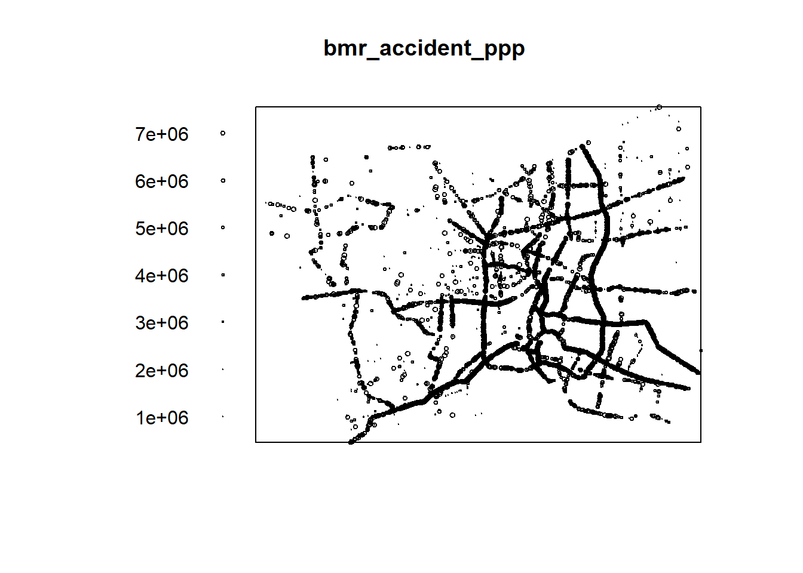
From the plot above, we can see that the thicker dots are where accidents occur more frequently.
4.1.4 Accident Points Visualization
tmap_mode("plot")tmap mode set to plottingtm_shape(accidents) +
tm_dots(alpha=0.5,
size=0.05) +
tm_basemap(server = "OpenStreetMap")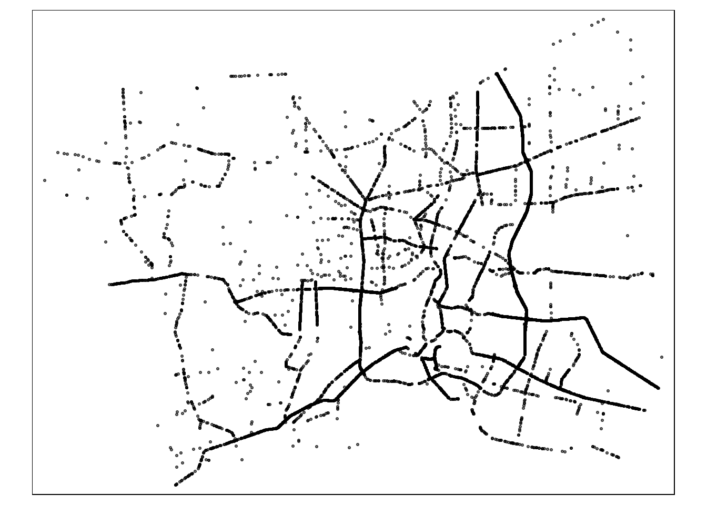
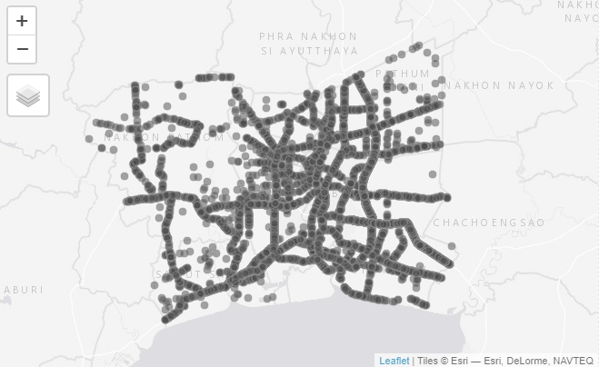
4.2 Cause of Accident Analysis
As seen from the accident points visualization, there are a lot of accident points. Let’s dive into the causes of the accidents. Before
unique(bmr_accident$presumed_cause) [1] "speeding"
[2] "running red lights/traffic signals"
[3] "other"
[4] "driving under the influence of alcohol"
[5] "cutting in closely by people/vehicles/animals"
[6] "vehicle equipment failure"
[7] "falling asleep"
[8] "illegal overtaking"
[9] "tailgating"
[10] "failure to yield/signal"
[11] "abrupt lane change"
[12] "debris/obstruction on the road"
[13] "driving in the wrong lane"
[14] "failure to signal enter/exit parking"
[15] "failure to yield right of way"
[16] "unfamiliarity with the route/unskilled driving"
[17] "dangerous curve"
[18] "medical condition"
[19] "sudden stop"
[20] "worn-out/tire blowout"
[21] "disabled vehicle without proper signals/signs"
[22] "overloaded vehicle"
[23] "reversing vehicle"
[24] "straddling lanes"
[25] "insufficient light"
[26] "vehicle electrical system failure"
[27] "road in poor condition"
[28] "disabled vehicle without proper signals"
[29] "slippery road"
[30] "obstruction in sight"
[31] "using mobile phone while driving"
[32] "ignoring stop sign while leaving intersection"
[33] "brake/anti-lock brake system failure"
[34] "no traffic signs"
[35] "repair/construction on the road"
[36] "no presumed cause related to driver"
[37] "no road divider lines"
[38] "inadequate visibility"
[39] "using psychoactive substances"
[40] "loss of control" Categorize the presumed_cause into 3 categories. Environmental Factor, Driver Behaviour and Driver Performance
bmr_accident <- bmr_accident %>%
mutate(factor = case_when(
presumed_cause %in% c("insufficient light", "disabled vehicle without proper signals", "no traffic signs", "no road divider lines", "dangerous curve", "worn-out/tire blowout", "vehicle electrical system failure", "slippery road", "repair/construction on the road", "inadequate visibility", "vehicle equipment failure", "debris/obstruction on the road", "disabled vehicle without proper signals/signs", "straddling lanes", "road in poor condition", "obstruction in sight", "brake/anti-lock brake system failure", "no presumed cause related to driver") ~ "Environmental",
presumed_cause %in% c("speeding", "driving under the influence of alcohol", "falling asleep", "sudden stop", "overloaded vehicle", "using mobile phone while driving", "running red lights/traffic signals","cutting in closely by people/vehicles/animals", "illegal overtaking", "abrupt lane change", "ignoring stop sign while leaving intersection", "tailgating", "using psychoactive substances") ~ "Driver Behaviour",
presumed_cause %in% c("failure to yield/signal", "driving in the wrong lane", "unfamiliarity with the route/unskilled driving", "loss of control", "failure to signal enter/exit parking", "reversing vehicle", "failure to yield right of way", "medical condition") ~ "Driver Performance",
TRUE ~ "Other" # Optional: to handle any cases that don't fit
))Split sf dataframe into 3 according to the factor of accident
ef_accident <- bmr_accident %>%
filter(factor == "Environmental")
db_accident <- bmr_accident %>%
filter(factor == "Driver Behaviour")
dp_accident <- bmr_accident %>%
filter(factor == "Driver Performance")Convert to ppp object
ef_accident_ppp <- as.ppp(ef_accident)Warning in as.ppp.sf(ef_accident): only first attribute column is used for
marksdb_accident_ppp <- as.ppp(db_accident)Warning in as.ppp.sf(db_accident): only first attribute column is used for
marksdp_accident_ppp <- as.ppp(dp_accident)Warning in as.ppp.sf(dp_accident): only first attribute column is used for
marksaccidents_factor <- bmr_accident %>%
group_by(factor) %>%
summarise(Accident_Count = n(), .groups = 'drop') summary(accidents_factor$Accident_Count) Min. 1st Qu. Median Mean 3rd Qu. Max.
140.0 380.0 708.5 3246.5 3575.0 11429.0 par(mar = c(8, 4, 4, 2))
barplot(accidents_factor$Accident_Count,
names.arg = accidents_factor$factor,
ylab = "No. of Accidents",
las = 2)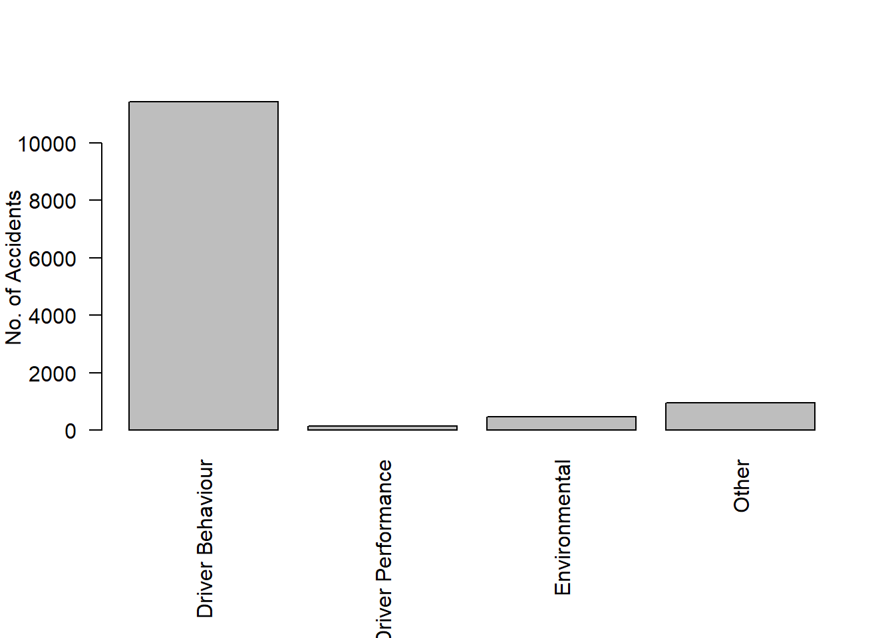
From the bar chart plotted above, it can be seen that in Bangkok Metropolitan Region, majority of the accidents are caused due to driver behaviour.
4.2.1 Environmental Factor
Let’s plot the accident points caused by environmental factor
tmap_mode("plot")tmap mode set to plottingtm_shape(bmr_road) +
tm_lines(col="grey") +
tm_shape(bmr_accident %>% filter(factor == "Environmental")) +
tm_dots(alpha=0.5,
size=0.05)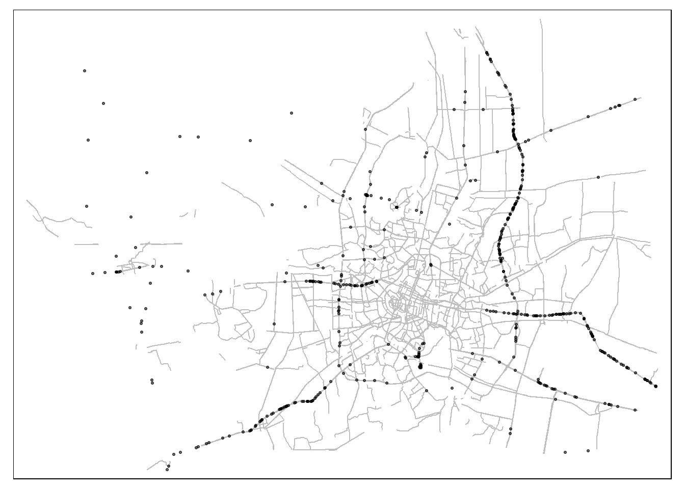
4.2.2 Behavioural Factor - Driver Behaviour
tmap_mode("plot")tmap mode set to plottingtm_shape(bmr_road) +
tm_lines(col="grey") +
tm_shape(bmr_accident %>% filter(factor == "Driver Behaviour")) +
tm_dots(alpha=0.5,
size=0.05)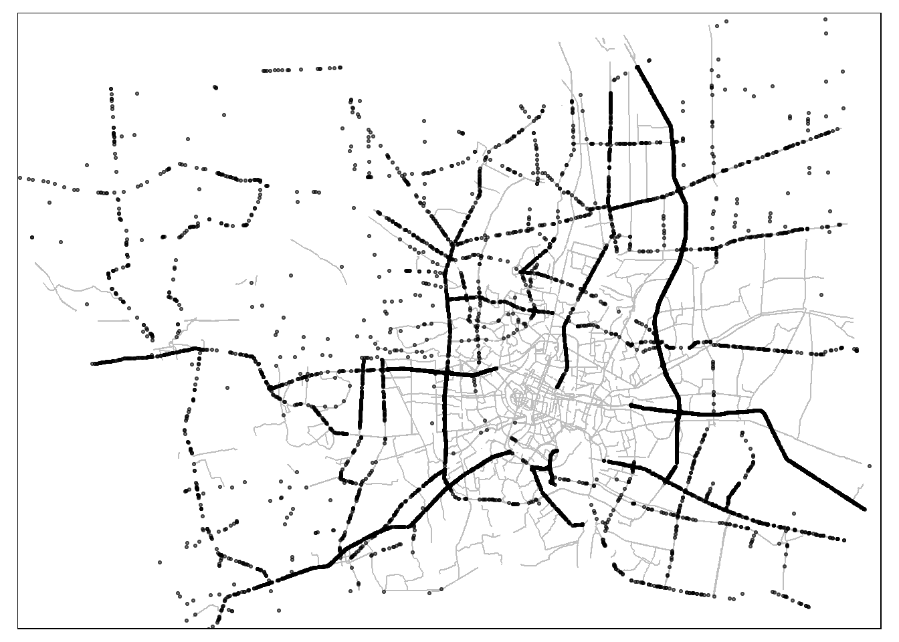
In accidents caused by driver behaviour, we can see the roads that have more concentrated dots are the road lines that most accidents occur due to driver behaviour.
4.2.3 Behavioural Factor - Driver Performance
tmap_mode("plot")tmap mode set to plottingtm_shape(bmr_road) +
tm_lines(col="grey") +
tm_shape(bmr_accident %>% filter(factor == "Driver Performance")) +
tm_dots(alpha=0.5,
size=0.05)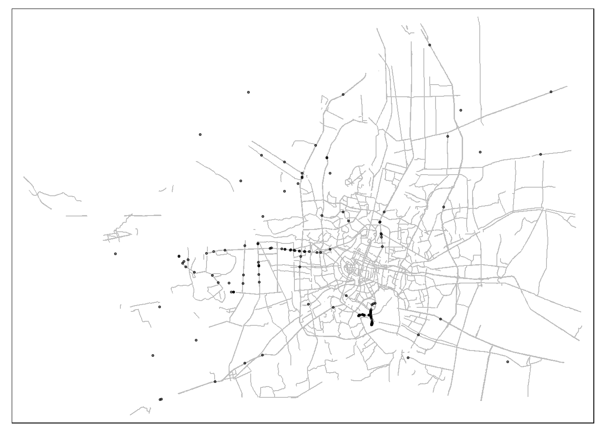
4.3 Road Accidents by Province
accidents_province <- bmr_accident %>%
group_by(province_en) %>%
summarise(Accident_Count = n(), .groups = 'drop') summary(accidents_province$Accident_Count) Min. 1st Qu. Median Mean 3rd Qu. Max.
827 922 1469 2164 2162 6089 par(mar = c(8, 4, 4, 2))
barplot(accidents_province$Accident_Count,
names.arg = accidents_province$province_en,
ylab = "No. of Accidents",
las = 2)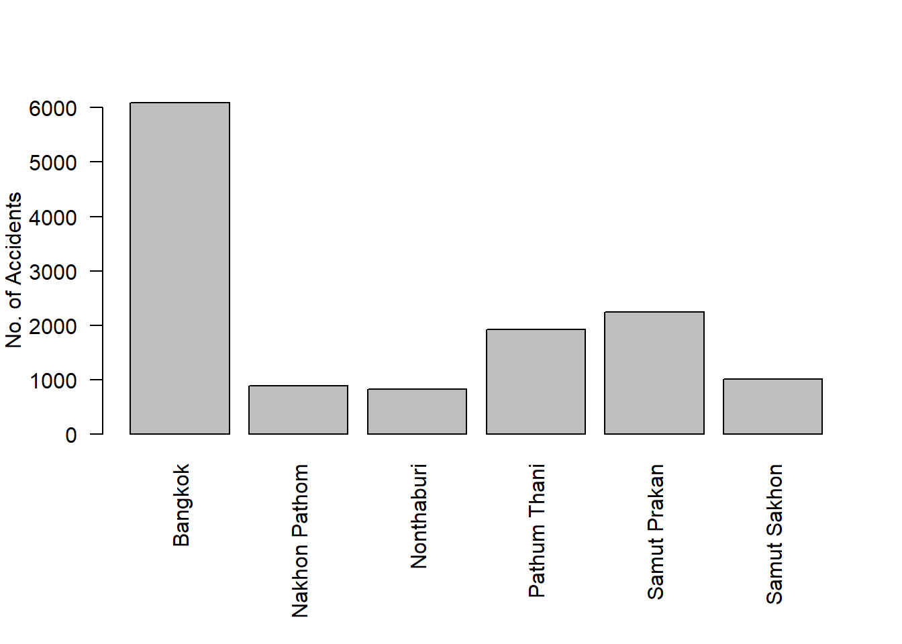
From the bar chart above, we can see that the majority of accidents happen in Bangkok area. Let’s plot it.
bkk <- bmr_accident %>%
filter(province_en == "Bangkok")
nb <- bmr_accident %>%
filter(province_en == "Nonthaburi")
np <- bmr_accident %>%
filter(province_en == "Nakhon Pathom")
pt <- bmr_accident %>%
filter(province_en == "Pathum Thani")
sp <- bmr_accident %>%
filter(province_en == "Samut Prakan")
ss <- bmr_accident %>%
filter(province_en == "Samut Sakhon")par(mfrow=c(2,2))
plot(bkk, main = "Bangkok")Warning: plotting the first 9 out of 18 attributes; use max.plot = 18 to plot
all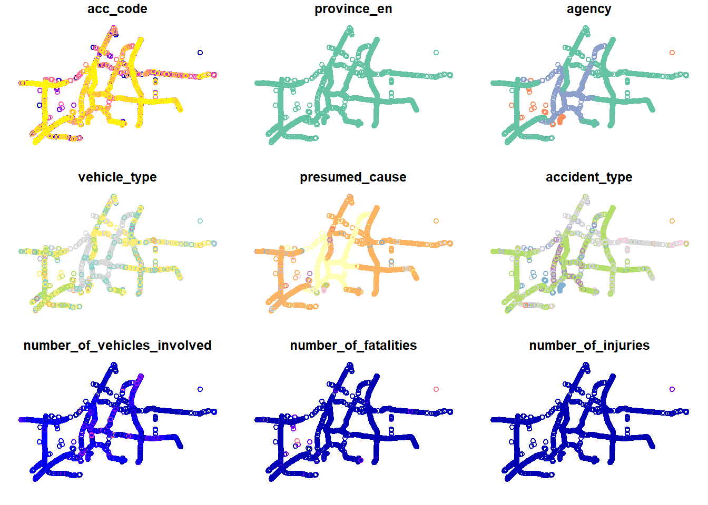
4.4 Bangkok Accidents Analysis
From the analysis result above, we can see that Bangkok has the most accident and most of the accidents happen due to driver behaviour. Let us dive deep into Bangkok area for further analysis
Filter out Bangkok and factor using the code chunk below
bkk_accidents <- bmr_accident %>%
filter(province_en == "Bangkok" & factor == "Driver Behaviour")Let us plot the map below
tmap_mode("plot")tmap mode set to plottingtm_shape(bkk_accidents) +
tm_dots()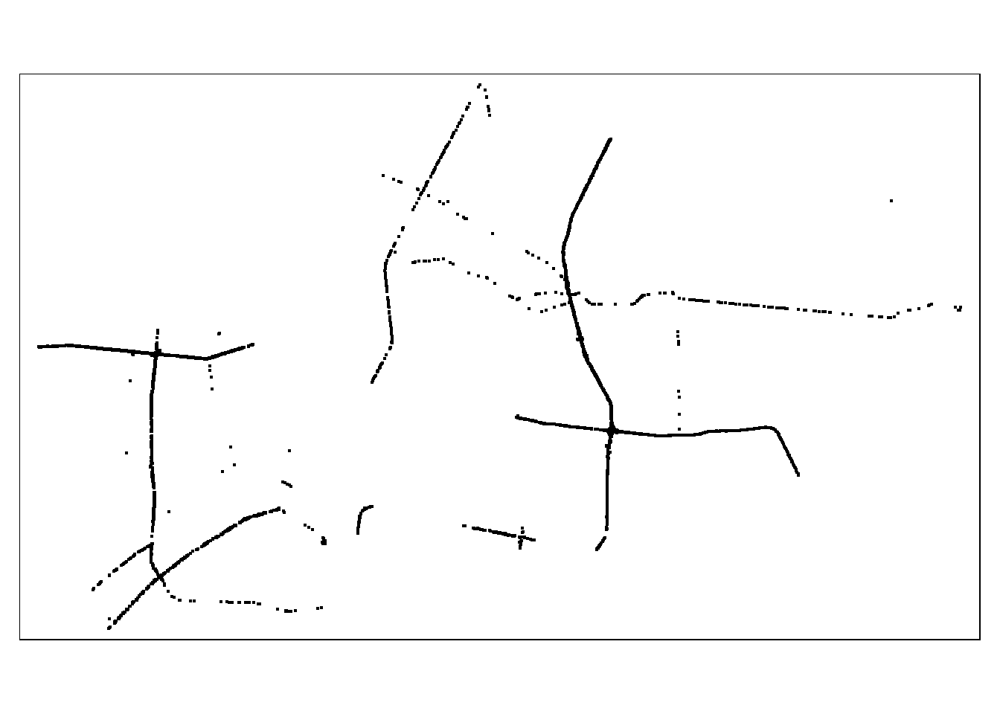
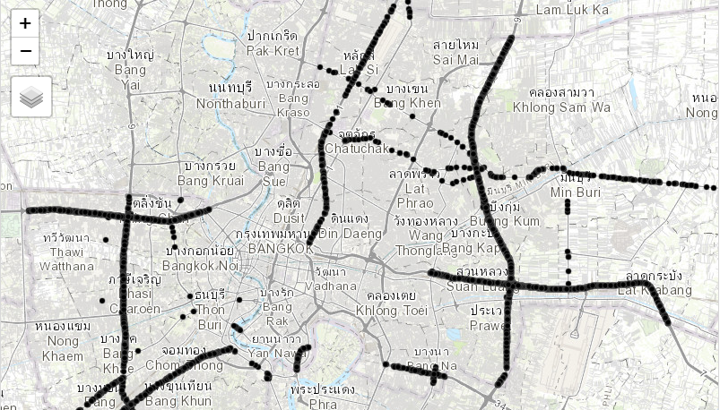
If we see from the map above, we can see that most of the accidents are concentrated on the 4-way intersection on the right side of the map. These accidents happen due to driver behaviours.
Let us check the type of highway with most accidents using the code below
bkk_highway <- st_join(bmr_road, bkk_accidents)accidents_highway <- bkk_highway %>%
group_by(bkk_highway$highway) %>%
summarise(Highway_Count = n(), .groups = 'drop')par(mar = c(8, 4, 4, 2))
barplot(accidents_highway$Highway_Count,
names.arg = accidents_highway$highway,
ylab = "No. of Accidents",
las = 2)Warning: Unknown or uninitialised column: `highway`.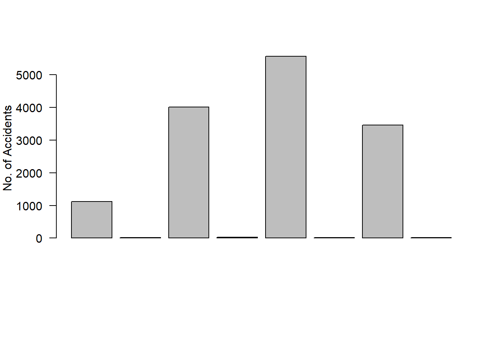
The barplot shows that most accidents happen in primary, secondary and tertiary highways.
4.4 Network Spatial Point Pattern Analysis (NKDE)
Using the appropriate network spatial point pattern analysis methods, conduct a detailed spatial analysis of the road accidents.
4.4.1 Preparing Lixels Object
The boundaries data is in geometry points, convert to linestring first
bmr_lineboundary <- st_cast(bmr_boundary, "LINESTRING")bmr_lineboundary <- st_is_valid(bmr_lineboundary)Prepare Lixels and sample
bmr_lineboundary <- bmr_boundary %>%
mutate(geometry = st_cast(geometry, "LINESTRING"))lixels <- lixelize_lines(bmr_lineboundary,200,mindist = 50)
samples <- lines_center(lixels)bmr_lineboundary <- bmr_lineboundary[!st_is_valid(bmr_lineboundary),]dim(bmr_lineboundary)[1] 477 7dim(bmr_accident)[1] 12986 19dim(samples)[1] 477 84.4.2 Network Kernel Density Estimation
bmr_lineboundary <- bmr_boundary %>%
mutate(geometry = st_cast(geometry, "LINESTRING"))
densities <- nkde(bmr_lineboundary,
events = bmr_accident,
w = rep(1, nrow(bmr_accident)),
samples = samples,
kernel_name = "quartic",
method = "simple",
bw = 300,
sparse = TRUE,
verbose = FALSE)data(bmr_boundary) Warning in data(bmr_boundary): data set 'bmr_boundary' not founddata(bmr_accident)Warning in data(bmr_accident): data set 'bmr_accident' not foundtmap_mode("plot")tmap mode set to plottingtm_shape(bmr_boundary) +
tm_dots("grey") +
tm_shape(bmr_accident) +
tm_dots("red", size = 0.05)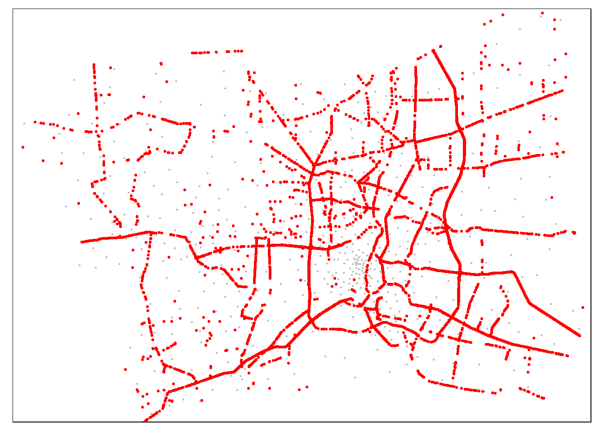
5 Conclusion
From this study, we can conclude that most accidents are caused by driver behaviour and the following picture is the 4 way intersection with the most accident data points.
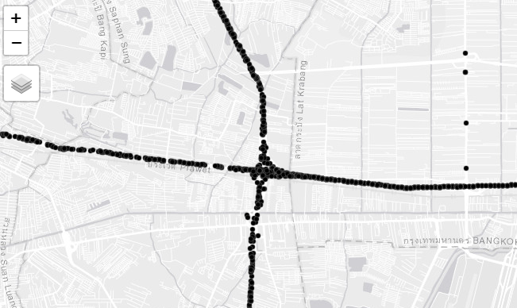
Most of the accidents happened in the primary, secondary and tertiary highways. The driver behaviour is something that we need to focus on for future studies, to prevent future accidents from happening. For future safety of road traffic, the Bangkok Metropolitan should pay more attention on primary, secondary and tertiary highways by implementing more strict rules on driving in the road. As we can see from the plotted maps, along the intercity road from Pathum Thani to Samut Prakan are filled with a lot of road accident points.